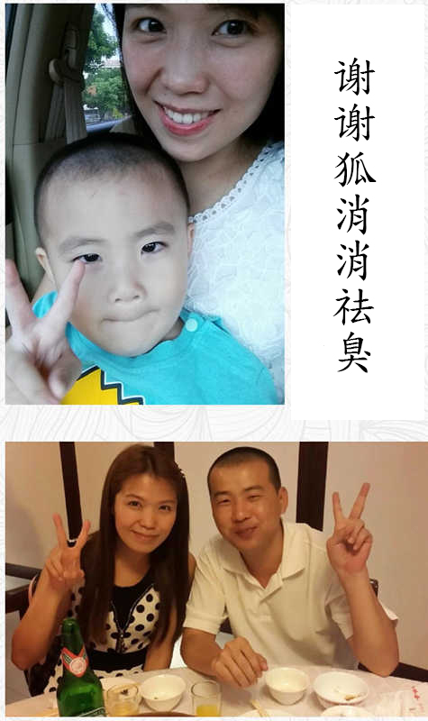

改善狐臭别花冤枉钱，每天一招搞定，清爽自在不反复！
大家好，我叫吴慧玲，今天写下这篇日志是想要告诉大家真的有办法可以去狐臭。就算是遗传性的狐臭，也完全可以成功改善。
天气变热以后，体臭会越来越明显，稍微留一点汗就能感觉腋下黏黏的特别难受。我以前傻傻地只懂得用止汗液，但效果并不好，越拖狐臭还变得越严重，特别烦人。
遗传狐臭如果不及时干预，还会增加遗传给下一代的几率。别等待孩子因为自己的“过失”而被人排挤、嘲笑，变得自卑、无助的时候，才来后悔。

我的狐臭是遗传我妈的，这点让她到现在都特别后悔。记得是15岁时第一次来月经之后，就开始出现狐臭。只要留一点汗，就会出现一股臭味，而且腋下会有黏腻的黄色分泌物，特别恶心。耳朵也莫名其妙的开始出油，不及时清理就会发痒发臭。感觉自己像是掉进泔水桶里，全身由内到外都在发臭。
我妈用了很多方法对付狐臭都看不到效果，我觉得遗传性狐臭肯定不好处理，为了不浪费时间和金钱，我直接去做了去狐臭手术，结果术后留下明显疤痕，不到一年狐臭又重新“找上门”，特别绝望。

为了能够正常生活和工作，我开始用各种控制臭味的产品，但用后臭味还是非常明显，每次出门我都要避开上下班高峰期，弄得自己紧张兮兮的睡也睡不好，几年下来精神状态极差。

很爱自拍的我，因为狐臭眼神里也会带着不自信
为了不让狐臭毁掉我的生活，我重新开始找去狐臭的方法。
在狐臭专业论坛里边，我发现有一个人经常被提起，大家都叫她狐消消，说她的厉害之处在于能够找到大家狐臭的根源问题，并定制对应的改善方案，效果非常好。有不少人用后停用两三年都没反弹，因为非常好奇到底是什么改善方法，我也加了狐消消的微信： ←长按复制微信。
狐消消询问我的狐臭情况，过往的狐臭经历，帮我定制了祛臭方案。耐心指导我去狐臭，还经常关心我的效果。
狐消消按照现代人的生活工作习惯改良了传统的狐臭改善方法，进行针对性的修护。
狐消消说狐臭的出现跟大汗腺出现漏洞要直接关系，需要恢复大汗腺的正常功能，才能从根源处理狐臭问题，避免复发。
按照狐消消的指导，我每天早晚都往腋下涂抹秘方，用了5天左右，臭味就明显变淡，流出来的汗也没有以前油。用了30天之后，没有再闻到狐臭，就连油耳问题都得到了改善。
有狐臭的时候我不太敢穿白衣服，穿一天衣服腋下的位置会变得又黄又油又臭，衣服基本就报废了。没了狐臭以后白衣服就算穿到破旧了，腋下那里也是白净的。
腋下因为长期间“浸泡”在油腻的分泌物当中，导致色素沉淀，皮肤又黄又油腻。用了狐消消的狐臭改善方案之后，腋下的皮肤才变得舒爽干净。
或许你会觉得狐消消定制的狐臭改善方案，光看原理并没有特别厉害的地方，一开始我也有这种质疑。但是只要坚持使用，去狐臭的效果是实实在在的。
我停用到现在也有3年了，没有出现任何不适，狐臭更没有反弹迹象。我很庆幸能够得到狐消消的帮助，让生活变得更美好，不仅收获了爱情，还有了可爱机灵的宝宝。

成功去狐臭以后，我陆陆续续推荐了几个朋友到狐消消那里咨询，定制祛臭方案，他们也都非常成功地解决狐臭问题。
改变生活品质从处理好狐臭开始
别让狐臭限制你的潜能
芳芳表姐：狐臭不像其它身体不适，会让你肉体受折磨，它更像一种心病，会让你的生活像陷入黑洞一样迷失自我。我要谢谢我表妹慧玲介绍狐消消帮我去狐臭，我用了一个多月就祛臭成功。没了狐臭人自然而然就变得自信，气质变好了，还敢自己创业做老板。
三代“同臭”的神奇变味经历
同事小燕：我妈，我，还有我的儿子都有狐臭，三代“同臭”。还好有小玲介绍我认识狐消消，我按照她给定制的祛臭方案使用，用了一个周期左右身体臭味就变淡了，效果算是非常理想的，也让狐消消帮我儿子还有我妈定制了祛臭方案，两个人的除臭效果都不错，先后解决了问题。有狐消消帮忙，我们一家才能不再让人“闻风丧胆”。
我的相亲终于成功了一回

老公的朋友罗浩：无论是收入还是个性，我自信都是男性里中等偏上的水准，但就因为有遗传性狐臭，30多岁还是个母胎单身。幸亏有慧玲介绍狐消消给我认识，让我成功去掉狐臭，变成“钻石王老五”，这次不再是人挑我，而是我挑人了，不得不承认，还是蛮爽的。
去狐臭找导师指导才能少走弯路，也会恢复得更好。狐消消在改善狐臭方面有自己独到的见解，而且是针对每个人的具体情况提供改善方案的。连我这种遗传性狐臭的都可以处理好，相信也完全有能力帮到你。
如果你也想找狐消消咨询去狐臭，建议你趁早关注，狐消消主要还是做研究的，为了保障咨询的质量，每天只接待10个人。如果大家加不上的话，就先保存微信号，第二天再加。但也别拖太久，狐臭早咨询早解决，你才能早日过上自由清爽的生活。
-=精彩评论=-
淡如菊
有狐臭啊，人生迷茫啊，每次聚会别人都嘲笑我，真的能改善好吗？
作者回复：
是狐消消按照我情况帮我制定的祛臭方案，每个人情况不同，用的方法也有所区别，你需要的话，可以加狐消消的微信咨询哈。她的微信号：
Monica
真的好巧，我的狐臭也是狐消消帮我处理的，现在都过去3年多了，狐臭也没有复发的迹象！甩掉狐臭，人变得舒爽真的特别好，至少不再怕别人的异样眼光，能活得更自在。需要去狐臭的朋友，强烈建议你们也去加狐消消微信，不会失望的！
王铁梅女士
我有狐臭，也是才发现的，怕同事看到笑话我，所以我一直都不敢说也敢问，你介绍的这位狐消消真的这么厉害吗？
作者回复：
只要是狐臭问题，都可以去咨询狐消消哦，我相信她制定的方案一定可以帮到你。她制定的方案，都是通过外用的形式去狐臭的，据说这样营养会更加直接修复大汗腺。实际上用起来，效果也确实挺不错的。
王铁梅女士：
好的。外用的好，不怕影响身体健康。我这就去加狐消消微信。
陈小舍
说到狐消消，我应该比较有发言权，我高中开始就有狐臭，当时我妈通过关系找到她帮我配了一瓶香体露，因为之前有狐臭挺严重的上课的时候班上的同学都能闻到，自卑死了。后来用了她的祛臭方案不到2个月，臭味彻底没有了，说来也是神奇，后来我还给她介绍了几个有狐臭的朋友给她，都顺利改善了，不得不佩服，一级棒！~
 miel
miel
我半个月前才找狐消消咨询的，用了她给我制定的祛臭方案，到现在才短短五天，但是流汗已经闻不到臭味了！效果真的很赞！我之前也用过别的产品，但这些跟她的方案比起来，真的就是在浪费钱！推荐有狐臭的朋友，去找狐消消咨询吧，效果好还省钱。
我是猪迪
我是怀孕之后开始有狐臭的，生产之后狐臭会消失吗？有必要现在处理吗？
作者回复：
建议你尽早干预一下。孕期因为内分泌失调，会导致大汗腺功能受损，就有出现狐臭的可能。生了宝宝之后，狐臭也不会自动好的！狐消消用的营养纯天然无伤害，孕期的妈妈也适合使用。有需要的话，可以去咨询狐消消。
宇文帅
之前我就在狐消消那里帮我爸定制了祛臭方案，我爸的狐臭都是十几二十年的那种了。但是用狐消消的方案，大概是两个周期左右，狐臭就彻底闻不到了。现在跟我爸出去也不会尴尬，挽着他的手出门也完全可以接受。谢谢狐消消，帮我创造了跟爸爸亲近的机会！